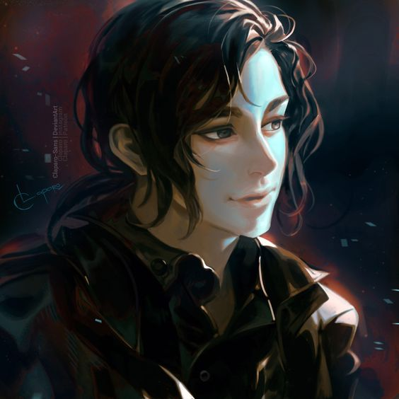
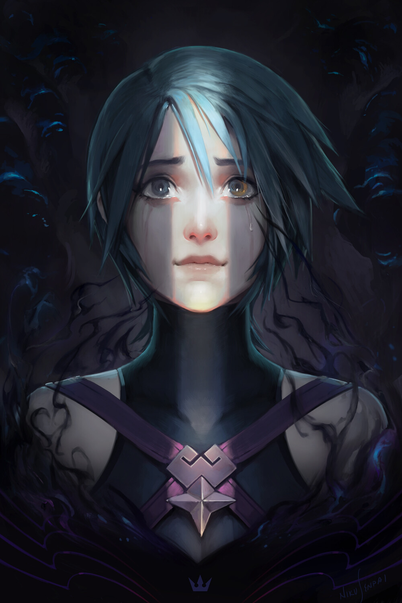
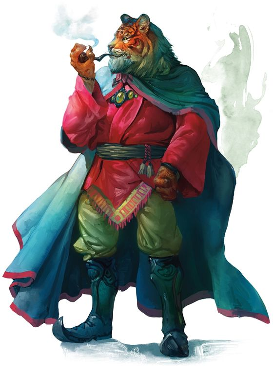

Ruven / Rave

Ruven - Campaign 1 Carpe Diem
Görkem FİLİZÖZ tarafından canlandırılmış ve oynanmıştır. Görkem'in ilk karakteridir. Ruven Verdun’un üst kısımlarında bulunan küçük bir köyde doğmuştur. Annesi ve babası sıradan insanlardı. Arnet adında bir kardeşi vardır. 14 yaşına kadar köyünde ailesi ile birlikte büyümüş bir çocuktur, fakat 14 yaşında beklenmedik bir haydut baskını gerçekleşir ve köydeki insanlar, haydutların planlı saldırısı tarafınca katledilmeye başlar. Ailesinin gözleri önünde katledildiğini gören Ruven, daha olayları kavramaya çalışırken eşi benzeri görülmemiş başka bir durum ile karşılaşır. "Olağandışı Bir Fenomen" gerçekleşir ve ufukta beliren ufak bir karanlık örtü gittikçe güneşi örtecek kadar büyüyerek bütün köyü kaplar ve içindeki herkesi özümser. Herkes gibi Ruven de saklanacak bir delik, kaçacak bir yer arar. Bu karanlık örtü Ruven’in gözünün önünde, yaşayan haydutları ve birçok köylüyü canlı canlı kurutur bir vaziyette yutar, hatta ailesinin cesedini bile emer ve o karanlıktan bir sima oluşup Ruven’e doğru bakar bakar. Bu silüet, Ruven ile konuşup ona: “Hizmetin benim için kaçınılmaz Ruven, ama işimi garantiye almak için kaderin olan bu kızı senden alıyorum ve kaderini mühürlüyorum. Hizmetinden emin olduktan sonra mühür bozulacak ve kaderine tekrar kavuşacaksın.” şeklinde bir açıklama yapar. Bu silüet, Ruven'e belirli koşullarda güç vaat eder ve Ruven'in Kaderi olduğunu söylediği mavi saçlı yaşıtı olan köylü kızına el koyar. Bu koşulları kabul ettiği sürece bu güç, Ruven'in Hanımı olacağını ve ona sahip çıkacağını söyler. Ruven ile Hanımı, bu noktada bir anlaşma yapar ve Ruven bu güçleri kabul ederek bir bağlılık sunar. Ruven'in yemini ve Hanımı'nın karanlığı benimsemesi doğrultusundaki direktifleri, bu olaylar esnasında Ruven'in hatırladığı son şeyler olur. Ruven ilgi duyduğu mavi saçlı ve yaşıtı olan köylü kızının da karanlık tarafından yutulduğunu gördükten sonra kendinden geçer.
Belirsiz bir süre sonra Ruven, gözlerini tekrardan köyün ortasında yerde yatar bir şekilde açar. Gördüğü şeylerin bir rüya olmadığını anlar ve ortalığın bir katliam alanına döndüğünü görür. Fakat burada iki kişi eksiktir; Kardeşi Arnet ve o mavi saçlı kız... Bu olaylardan sonra Ruven değişmişti, eski neşeli ve mutlu tavırlarını koruyamasa da olanlardan sonra en azından bir amaç edindiğinden ötürü pozitif kalmaya devam etmeye çalışıyordu. Fakat gene de Ruven’in bazı koşullarda bu olaylar ve katliamlar ile alakalı sanrıları tutabiliyordu. Bu olaylardan sonra, 20 yaşına gelene kadar kendini silah ve kalkan kullanma konusunda eğitti, ve Hanımı'nın ona bahşettiği güçleri öğrenebildiği kadar öğrendi. Yıllar boyunca rüya olarak "Hanımını" görse de gerçek anlamda onunla bu süreçte hiç iletişim kuramamıştır. İletişim kuramasa bile bazı durumlarda ondan kendi kişisel gelişimi konusunda bazı talimatlar almıştır. Bu direktifleri uygulayarak belli bir noktaya kadar kendini hazırlayan Ruven'in, Hanımına hizmet etmesi için kendini kanıtlaması gerekmektedir. Bu yüzden Hanımı Ruven'i Zonthar adındaki kasabaya göndermiştir. Hanımının verdiği lütufları kullanma konusunda hala acemi olsa da, bu kasaba Ruven'in gelişebilmesi ve kendini kanıtlayabilmesi açısından ve dünyanın ne kadar gaddar bir yer olduğunu tanıyabilmesi açısından altın niteliğindeydi.
Zonthar'a vardığında, ileride Carpe Diem adını taşıyacak grubun kurucu üyeliğini yaptı. Daha sonrasında ise, Zonthar'ın iç meselelerini çözmek adına, orada tanıştıkları Uther, Daynore ve John adındaki kişiler ile birlikte, oradaki azılı suçlulardan en nihaisi olan Damian ile tanıştı. Bu noktada Ruven, Damian'a olması gereğinden daha fazla ilgi gösterdi ve onunla sıkı bir arkadaşlık yürüttü, onu göründüğü gibi yargılamadı. Damian ile olan dostluğu sayesinde de Menzher adındaki Tiefling ile sıkı bağlar geliştirdi. Menzher ile ve Damian ile dost olması, Zonthar Yönetimindeki Vali olan Corado Vanelli'nin hiç hoşuna gitmedi. Menzher, Zonthar'daki kitlelerin bazıları tarafından sevilse de Vali tarafından, aynı Damian gibi bir suçlu olarak görülüyordu. Ruven'in kurduğu bu dostane ilişkliler, grubun bir diğer üyesi olan Uther Işıkgetiren adındaki Paladin ile olan dinamiğine de zarar veriyordu. Özellikle Ruven'in bir Warlock olduğunu öğrendikten sonra Uther, Ruven'e karşı daha katı ve sert tutumlar almaya başladı. Birbirlerine karşı olan çekememezlikleri ve düşmancıl tavırları sonununca Uther ve Ruven'in arası açıldı. Uther, bir Paladin olarak Ruven'in üzerinde baskıcı bir otorite kurmaya çalıştı ve Ruven'in yaptıklarını aşağıladı, yaptığı her hareketin altında bir hinlik aradı ve Ruven'in suçlu olduğunu meşrulaştıraca her türlü yöntemi denedi. Fakat bardağı taşıran son damla olarak Uther, Ruven'e arkadaşları arasında halka açık bir şekilde otoritesini ve rahiplik güçlerini kullanarak işkence etti. Ruven için bu artık kabul edilemez ve durması gereken bir noktaya gelmişti ve Ruven, yapılabilecek en "Alçakça" hareketlerden birini yapmaya karar vermişti.
Zonthar'da aldıkları bir görev sonrasında, kasabanın kuzeybatı yakasındaki ormanlara girerek, kasabadan kaçırılan kişileri ve çocukları serbest bırakabilmek için bir goblin saklanma inine doğru yola çıkmışlardı. Bu görevi başarıyla bitirmelerine ve insanları özgür bırakmalarına rağmen, çok zor savaşlardan çıkmışlardı ve bitap düşmüş bir şekilde canları için kendileri de kaçar konumdalardı. Gruptaki her birey ağır yaralıydı ve buna Uther de dahildi. Hanımı'nın manipülasyonuna kulak vererek zihnini çelmesine izin veren Ruven, Hanımı'nın vereceği bir ödül için Uther'i sırtından bir Eldritch Blast Işını ile vurarak ve ona ihanet ederek öldürdü. Grup arkadaşları, hatta Damian bile bunun karşısında şoka girmişti, ama bu ihanetin karşısında duygusal davranarak Ruven'e saldırdılar. Ruven'i öldürmek için hepsi bir vuruş gerçekleştireceği esnada, bir çeşit teleport aracılığı ile Hanımı, Ruven'i o noktadan güvenli bir bölgeye ışınlayarak kurtardı ve ödül olarak kendi kutsamasını bahşetti. Lakin bu hamlesinden sonra Ruven, gruba karşı bir ihanet gerçekleştirmişti ve grubun ona olan güvenini kaybetmişti. Suçlu bir aktivite olarak yaptığı suikast, grubu tarafından Vali'ye rapor edilmiş ve Zonthar'da aranan bir katil haline gelmişti. Bu sebepten ötürü Zonthar'a giremiyordu, fakat hala Zonthar'ın iyiliğini istediği için ve Menzher'i desteklediği için kasabanın ormanlık bölgesinde, vahşi doğanın içerisinde tek başına kalıyordu. Belli bir süre sonra grubu ile buluşma fırsatını yakalasa da, grubundaki kalan kişiler tarafından dışlanmıştır, ve o noktadan sonra grubun lideri olan Daynore tarafından tekme tokat dövülerek beter bir hale gelmiştir. Bu esnada Ruven kendini tutmuştur ve Daynore'ye bir yumruk bile atmamıştır, fakat eğer kendini tutamasaydı John, olası bir senaryoda onu öldürme niyetiyle saklanmış bir biçimde suikaste hazır olarak bekliyordu. Gene de Ruven dayak yediği esnada, yok olduğunu bildiği Tiefling Köyü ile alakalı bilgileri Daynore'ye anlatıyor, ve kendisini anlaması ve ona inanması için ona bu köye birlikte gitmeleri gerektiğini söylüyordu, fakat Daynore ve diğer tüm grup üyeleri için güven duygusu kaybolduğundan dolayı Daynore, Ruven'in sözüne aldırış etmedi ve onun fikrini dinlemeyerek onu orada yalnızlığına terk etti.
Yaptıklarından pişman olmayan, ama yaptıklarının cefasını yalnız bir biçimde çeken Ruven, gene de gölgeler aracılığı ile grubunu gizlice takip etmiştir. Fakat bir noktada ormanda tekbaşına hayatta kalma mücadelesi verdiği sırada, köye baskın için hazırlanan worglar ve goblinler tarafınca etrafı çevrilmiş ve ölümün eşiğine gelmiştir. Orada ise yardımına Orlon adındaki gezgin bir Druid'in ona yardım etmesi neticesiyle hayatta kalmıştır. Onunla belli bir zaman geçirerek, Orlon'dan doğada nasıl hayatta kalabileceği ile alakalı bilgiler öğrenmiştir ve daha sonrasında yollarını minnettarlık ile ayırmıştır. Fakat bu ormanda tek başına hayatta kalma macerası sırasında bilmediği bir şey vardır ki o da Uther'in yeniden hayata döndüğüdür. Menzher'in kendisini bulması ve gizlice tavernasına alması aracılığı ile bu bilgiyi öğrenmiştir. Tavernada saklandığı o gizli süre boyunca grup arkadaşları ile konuşup, asıl tehlikenin Uther olduğunu söyleyerek onlar ile yeniden bir bağ kurmuştur. Uther'i baş düşman etme konusundaki manipülasyonları başarısız olsa da, zamanla Ruven ve grup arasındaki ilişki belli bir noktaya kadar düzelmiştir. Bu grup ile arasındaki buzları yeniden eritme denemeleri esnasında, gruba yeni katılan Toji adındaki bir Gnome bilimadamı ile arkadaş olmuş ve onun yarattığı hareket eden metal golem olan Tehlike ile zaman geçirmeye başlamıştır. Fakat Uther tamamen cinnet geçirmiş ve belki de fıttırmış bir vaziyete bürünmüştü dirilişinin ardından. Kefaret yolunda gözünü kan bürümüş, intikam arzusu ile dolup taşar bir vaziyetteydi. Uther'in gözünün dönmüşlüğü, onun Vali ile birleşerek Ruven'e karşı bir komplo hazırlaması ile sonuçlandı ve bu komplo neticesinde Ruven'i tutuklatarak zindana atmayı başardılar. Grup üyeleri bu anlamsız intikam saçmalığını sonlandırmak adına politik bir şekilde Vali ve Uther ile bu sorunu çözümlemeyi deneseler de, bu süreç başarısız olmuş ve en nihayetinde Ruven'in İdamı kaçınılamaz bir karar olmuştur.
Ruven zamanı geldiğinde darağacına çıkarılmış ve infazı için bütün halk toplanmış halka açık bir yargı ile infaz edilmesi planlanılmıştır. Bu süreçte grup arada kalmış, ve ne Ruven'in ne de Uther'in yanında olmuş, aynı halk gibi izleyici kalmış ve bu durumu izlemiştir. Ruven'in yargının önüne çıkmış ve kanıtlanmış şekilde suçlu olduğu ispatlanmıştır, ve kendi savunması yetersiz görülerek İdama Mahkum Edilmiştir! Lakin infaz gerçekleşmeden hemen önce Menzher halkın arasında kendini göstermiş ve Ruven için Tanrıların Huzurunda Dövüş İle Yargılanma olduğunu söylemiştir. Ruven bu hakkını kullanmak istediğini söylediğine ise Menzher onun Şampiyonu olmayı kabul etmiştir. Bunun sonucunda Vali ve tarafında işler kötü gitmeye ve etekler tutuşmaya başlamıştır. Vali bu dövüş ile yargılanma mevzusunu reddedemezdi çünkü bu hak, yıllardır süregelen dini bir gelenekti ve doğuştan gelen bir haktı. Eğer bu kuralı reddererse Vali, Kafir statüsüne düşecek ve Zonthar üzerindeki itibarını kaybedecekti. Fakat Vali'nin kendisinin dövüşmesinin pek imkanı olmadığı için Vali'nin de bir şampiyon çıkarması gerekiyordu. Vali'nin kendi sol kolu olan Brad'a bu teklifi götürdüğünde Brad Menzher'i tanıdığı için ona karşı şansının olmayacağını söyleyerek bu olası düelloyu Menzher'in kazanacağını söyledi. Vali daha sonrasında bu teklifi Uther'e götürdüğünde ise Uther bu duellodan korkarak yeniden ölmek istemediği için o da bu teklifi reddetti. Valinin şampiyonu olarak çıkaracak kimsesi olmadığından dolayı, ya kendisi dövüşecekti ya da Ruven'in suçu düşecekti. Fakat Vali nasıl bir karar vermesi gerektiğini çaresiz bir şekilde düşünürken halkın arasında gizemli bir figür beliriverdi ve bu figür Vali'nin Şampiyonu olmayı teklif etti. Bu gizemli kişi, Kreber Yağmurmızrağı'ydı. Kreber, Menzher'in eskiden beri kan davası olduğu bir rakibiydi ve aynı Menzher gibi Kreber de aynı Matron'a hizmet etmişti. Yani zamanında aynı Ruven gibi hem Menzher hem de Kreber Bıçakların Hanımı'na hizmet etmiş iki Warlock'tu, fakat bu hizmet esnasında yaşanan bir olaydan dolayı birbirlerine düşman olmuş iki hasım olmuşlardır. Vali bu fırsatın ayağına gelmesiyle mest olmuş ve kendi şampiyonu olarak Kreber'i öne sürmüştür. Uther rahiplik öğretilerine intikam hissi ağır bastığı için ihanet ederek, Tanrıların huzurunda yapılan bir dövüş ile yargılanma savaşına iki tane Warlock'un çıkmasına izin vermiştir.
Dövüş gerçekleşmiş ve bu dövüşü Menzher kaybetmiştir. Menzher önce dövüş esnasında kolunu kaybetmiştir, sonrasında da canını kaybetmiştir ve dövüşten canlı ayrılan taraf Kreber olmuştur. Böylece Ruven suçlu ilan edilmiştir ve idamının hükmü verilmiştir. Fakat bu idam gerçekleşmeden önce, halkın belirli bir kısmı ayaklanmış ve bir rahibin itiraz etmesi gereken duruma halk itiraz etmiştir. "Tanrıların huzurunda kafirler savaştı..." "Hepimiz lanetleneceğiz..." gibi söylemler ile bu duruma isyan ederek bir arbede başlatmışlardır. Bu arbede esnasında grup Menzher'in cesedini alarak bir arka sokağa çekmeyi başarımıştır ve Ruven de kendine bir kaçış fırsatı yakalamıştır. Bu fırsatı değerlendiren Ruven, direkt olarak kasabanın en dışındaki sık olan ormanlık alana kaçmıştır fakat Kreber Ruven'in kaçtığını görerek onu kovalamış ve belirli bir noktada sıkıştırmıştır. O esnada grup Ruven'in yardımına yetişmiştir ve onlarla birlikte Uther de gelmiştir. Uther o noktada Kreber'e ve Vali'ye ihanet etmiştir ve orada birlikte Kreber'i öldürmüşlerdir fakat Ruven çok ağır yaralanmıştır. Ruven'i Menzher'in tavernasına getirdiklerinde ise Ruven, Menzher'in dirildiğini görmüş ve orada hep birlikte duygusal bir an yaşamışlardır. Ardından gergin bir ortam oluşarak, bu gergin ortamın içerisinde Uther ile farklılıklarını bir kenara koyarak ateşkes imzalamışlardır.
Vali, Uther'e karşı olan bütün saygı ve sevgisini yitirse de, halkın suçlu olarak görmediği Ruven'i öldürmediği için, veya Menzher'i öldüren başka bir Warlock olan Kreber'i öldürdüğü için Uther'i suçlu tutamazdı. Vali hala yönetimdeydi fakat en güvendiği adamı Uther'i kaybetmiş, Sol kolu Brad, arbede sırasında bilinmeyen bir nedenden dolayı yaralanmış, ve Vali'nin kendi büyücüsü olan Zest, bu olanlardan sonra Vali'yi terk ederek Beyaz Şehir'e dönmüştü. Vali'nin gücü her geçen gün daha da zayıflıyor ve Vali kendi konumunu korumak için her gün daha da paranoyaklaşıyordu. Bu yüzden Vali, biriktirdiği devasa miktardaki paranın büyük bir kısmını kullanarak, o zamanlar diyardaki bilinen en büyük gezgin paralı asker grubu olan "Demir El" ile iletişime geçmiş ve onlardan 13 Elit adamı, kendi kişisel çalışanı ve koruması olarak kiralamıştır. Bu 13 adamın Lideri olan Sornatt adındaki şövalye, Demir El'deki kendi arkadaşları ile bir anlaşmazlık yaşamış ve pazarlığı beğenmediği için Zonthar'a geldikten kısa bir süre sonra Zonthar'ı terk etmiş ve Demir El'e geri dönmüştür. Daha sonrasında ise kalan Demir El üyeleri, Vali'nin direktifleri ve istekleri neticesinde 4'er kişilik 3 bölüğe ayrılmış ve her bölüğün başına birini atamışlardır. Bölüklerin başında Storgim, Felvod ve Whitlock adındaki elit adamlar bulunuyordu. Vali ise spesifik olarak özel koruması olma neticesinde, Felvod'un birliğinden Bob adındaki, adamların arasında en iri gözüken Yarı Orc'u seçti. Bu olaylar olurken, köye doğru yaklaşan bir goblin istilası tehlikesi mevcuttu. Vali'nin verdiği direktif ile grup, bir goblin silah ve yemek tedarik zinciri noktasına baskın düzenledi ve goblinleri ileri vadede zayıflatmayı amaçladı. Bu noktada aynı zamanda Zonthar halkına ihanet etmiş ve goblinlerin safına katılmış olan Doktor Helmus ve onun yarattığı Et Golemleri ile savaştılar, ayrıca mağarayı koruyan goblinoidleri de alt etmeyi başardılar. Fakat doktoru öldürdükten sonra mağaradan çıkarken, bu tedarik zincirinin patlamasının ardından bu zincirin patronu konumundaki Darmull adındaki Uzun bir Glaive kullanan Albino bir bugbear ve onun Ogre askerleri tarafından pusuya düşürüldüler. Uther bu savaşta yiğitce savaşmasına karşın şehit düşmüştü. Grup Uther'in cesedini köye getirmeyi başardı fakat Ruven gene de kendini olabildiğince köyden uzak tutuyor ve ormanda yalnız başına kamp yapmaya devam ediyordu. Lakin Ruven'in bu tutumu ve cesedin geri getirilmesi, Vali'nin ekmeğine yağ sürmüştü. Vali Ruven'e, Uther'i tekrar öldürdüğü şeklinde bir iftira atarak komplo kurmuştu. Bu sefer bu komplo tamamen yalandı, çünkü bu sefer Uther'i Ruven öldürmemişti ve az bile olsa arkasından çok kısa süreliğine yas bile tutmuştu, ancak gerçek Vali için önemli değildi, önemli olan Ruven'in ölmesiydi.
Vali Ruven'i, Uther'i öldürme suçuyla yargılanması adına kendi malikanesine çağırmıştı, ve escort olarak Ruven'i getirmesi adına Bob'u görevlendirmişti. Daynore bu safsataya karşı çıksa da, Ruven kendisinin bir planı olduğunu söyledi ve Daynore'den ona güvenmesini istemişti. Daynore da Ruven'e güvenmeyi seçti ve sanki Ruven'i yakalamışlar şeklinde bir izlenim vermişti. Daynore da Bob'u bu şekilde yarı ikna ederek yarı kandırarak, Ruven'i sadece elleri bağlı bir vaziyette Vali'nin Konağı'na getirdiler. Vali'nin konağındaki yargı odasında sadece birkaç kişi vardı; Corado Vanelli, Valinin Sol Kolu Brad, Bob, Daynore ve eli bağlı vaziyette olan Ruven. Ruven'in planı, gümüş dili ve büyüleri ile valiyi kandırmaktı ama bu planın bir garantisi olmadığı için plan başarısız oldu ve ters tepti. Daynore, Vali'ye yalan söyleyerek kandıdı ve Goodberry spellini kullanıp bir meyve yaratarak, bu meyvenin Ruven'i zehirleyeceğini ve konuşmak zorunda kalacağını söyleyerek ikna etti. Fakat Ruven bir şans daha bulsa da, yaptığı aptalca plan yüzünden bu şansı da geri tepti ve Vali Bob'a, Ruven'in ağzını bağlamasını ve infazını gerçekleştirmesini emretti. Bob o anda infazı gerçekleştirmek için ahlaki olarak biraz çekingen ve anlık olarak tereddüt etti. Daynore da yayını çekerek Vali'yi öldürmeyi düşündü ve Ruven'i alıp kaçmak istedi fakat o da tereddüt etti. Lakin Brad orada tehdit etmedi ve Ruven'i uzun kılıcıyla birlikte gözünden şişleyerek öldürdü. Bu sefer Hanımı Ruven'i kurtarmamıştı. Ruven ölümünü kabullenemedi, ve kendini boşlukta hissetti. Yaptığı anlaşma gereği ruhunu Hanımı'na teslim etmişti Ruven. Ölümünden sonra Ruven'in ruhu Ruhlar Kuyusu'nda sonsuz bir düşüşe geçti.
Ruven ismi, İmparatorluk tarafınca gerçek bir "Carpe Diem" üyesi olarak tanınmamıştır, çünkü grup ile birlikte Zincirdarlar ile tanışmamış ve Underdark'a grup ile birlikte inmemiştir. Gene de bu grubun belli noktada bir parçası olduğu için ismi Tanrı Anıtları'nda kısa da olsa ismi geçiyordur. Anıtlardan ziyade Ruven ismi, Zonthar'da çok hürmet görmüştür ve Zonthar'ın Kurtarıcısı olarak günümüzde bile hala anılıyordur. Genç yaşıyla ve parlak bir çocuk olmasıyla insanlara hitab edebilmiş ve Zonthar'da adı kahraman olarak anılacak şekilde tarihe geçmiştir. Eylemleri olmasaydı Zonthar hiçbir zaman bu kadar iyi durumda olmazdı. Fakat tarihin yansıtamadığı biçimde, bu çocuk ile alakalı garip bir şeyler vardı ve insanlar bundan şüphe duyuyordu. Belki de bu gariplik, gün yüzüne çıkmadan şehit düşmesi, Ruven adındaki kimsesiz için en iyisi oldu...
Unvanlar ve Lore
Unvanlar:Uther'ı öldüren ilk Carpe Diem üyesi. Kendi yargılamasında hayatını kaybetti. Rave olarak dirilişiyle Maraz Işık'ı kurdu ve Şeb-i Ervah felsefesini yaydı.
☠️ Char Sheet
Karakter Bilgileri



.jpg)